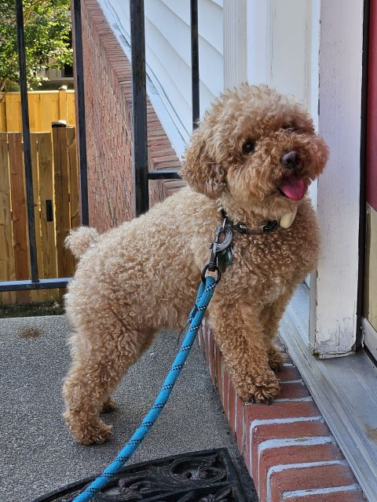
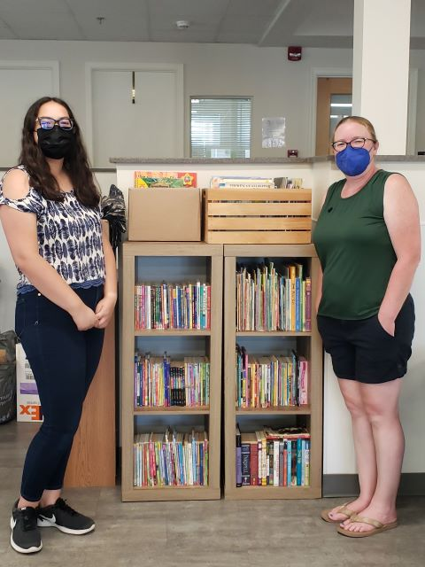

Detailing my college education, my work experience, and my experiences and skills.
I am a college junior, majoring in Biology and minoring in Professional and Technical Writing. I keep myself busy, working at Chick-fil-A and the Institute of Biohealth Innovation, as well as dogsitting and babysitting. In my free time, I like to read and play video games.
College Education
Ordered in ascending chronological order
Biology Courses
These are classse I have taken either during my time majoring in bioengineering or biology.
Introduction to Bioengineering
Cell Structure and Function
Biomaterials
Biostatistics
Biodiversity
Microorganisms
Introductory Animal Behavior (upcoming semester)
STEM Courses
These are classes I have taken either when I was previously majoring in bioengineering or for my mason core curriculum.
General Chemistry
Calculus 1
Organic Chemistry
Introduction to Computer Programming
Calculus 2
Calculus 3
Physical Geology (upcoming semester)
College Physics 1 (upcoming semester)
English Courses
These are classes I have taken either during my time minoring in Professional and Technical Writing or for my mason core curriculum.
Greek and Roman Epics
Advanced Composition
Professional and Technical Writing
Web Authoring and Design
Introduction to Writing and Rhetoric (upcoming semester)
Introduction to Creative Writing (upcoming semester)
Overview of Work Experience
Currently I have four jobs, all of which I balance with school. They are all part-time, which is how I'm able to give them the focus they need. Here is my resume.
The Institute of Biohealth Innovation (GMU)
I work at the Institute of Biohealth Innovation (GMU) as a Junior Science Writer. I started in February 2024 and my job is to write articles for publication to promote the activities, events, and accomplishments of the Institute. In order to do so, I interview key organizers and researchers to gather background information and sufficient understanding of the subject material. I also do whatever I can to contribute to the main goal of the Institute:advancing human health and well-being at multiple scales.
Chick-fil-A
I work at Chick-fil-A as a Team Lead and Trainer. I started in August 2020 and my job is to lead shifts, balance money, and efficiently manage team members and guests to ensure a productive experience. I was promoted after showing exemplarieness in both the team member position and trainer position. I have experience in training team members in all positions of the restaurant's front-of-house and I interact with customers directly to ensure an accurate and positive fast-food experience.
Childcare Provider
I started providing childcare in October 2023. I have cared for children from the ages of 4 to 10 during select afternoons and evenings, facilitating meals and ensuring that children are safe and entertained. In addition, I assist them with school homework and assigned readings.
Rover
I started Rover in August 2018. I have dogsat for more than a hundred and fifty clients and have garnered more than 115 five-star reviews over the years. It has taught me how to balance working and school at the same time.

Muffin, one of the dogs I dogsit.
Experience
Dulles Church
From January 2023 - present
Serving as Lead Preschool Teacher
Run classes for as many as 10 children during church service
Keep children entertained and educated with lessons and games
Girl Scouts

Me and my girl scout leader with my gold award project.
From 2011 - 2022
Earned Gold Award: created a free library at the local homeless shelter and held sessions to read book to the children living there
Co-lead brand new local Brownie Troop
Volunteered at multiple places, such as the Dulles South Food Pantry, Feed The Homeless in DC, and various Girl Scout events
Helped organize World Thinking Day, a council-wide event
Skills
Still-expanding knowledge of biology, college education
Knowledge of the coding languages Python, HTML, and CSS, college education
Knowledge of the ArcGIS system, high school education